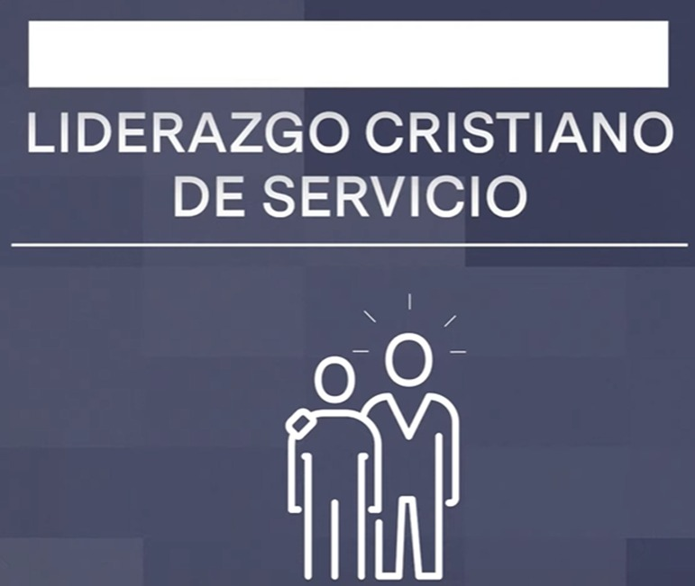

Mi dibujo sobre mi vocación en la vida fue una expresión personal y reflexiva de mis aspiraciones y sueños más profundos. A través de trazos y colores, representé mis pasiones, intereses y habilidades, delineando un camino hacia el cumplimiento personal y profesional. Cada detalle en el dibujo reflejaba mi búsqueda de significado y propósito, así como mi compromiso con el crecimiento y la autenticidad. Al crear esta representación visual de mi vocación, pude explorar y entender mejor mis metas y prioridades en la vida, guiándome hacia un camino de realización y satisfacción. Este ejercicio de autorreflexión me permitió visualizar mis aspiraciones de manera tangible y concreta, inspirándome a seguir adelante con determinación y pasión hacia mis objetivos.
Taller de comunicación asertiva
Competencia 10
Liderazgo Cristiano de servicio